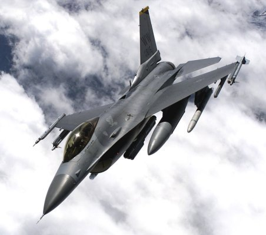

SCP F-16 Avionics Shop Supports:
Support Center Pacific is a forward deployed facility
designed to provide depot-level maintenance support to
warfighters based in the Pacific theater. The F-16 Avionics Shop
supports most of the avionics Line Replaceable Units (LRU) in the
F-16 aircraft. We provide depot-level troubleshooting and repair
of Computer, Inertial, Processors, Pneumatics, Displays,
Indicators, and Radio Frequency Systems, with capability of
expanding into Circuit Card Assembly repair and other component
subassemblies depending upon customer demand. Our goal is to
produce high quality avionics parts in a timely manner to support
our customers.
Our shop capabilities are explained here.
